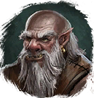
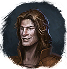
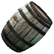
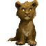

Камень
Предметы / Ресурсы
Открыть в интерактивной вики →
| Вес | 1 |
|---|---|
| Цена | 0 |
Описание
Ресурс для строительства гильдейских построек.
- Можно получить:
- - Обменяв у
 Снабженец 6х
Снабженец 6х  Гранит
Гранит  2х Камень
2х Камень - - Обменяв у

Диллег 10х Полевой шпат 5х Камень
Полевой шпат 5х Камень - - Выполнив задание у

Лезгар принеся 1х
Старое вино и получить 60хКамень - - Выполнив задание у Диллег принеся 1х

Молодой сабельтиг и получить 150хКамень
| Сырьё для строительства гильдейских зданий. |
Применение
|
Способы получения
|

 у Хайне в Трентисе,
у Хайне в Трентисе, у Парвана Разоффа в Трентисе.
у Парвана Разоффа в Трентисе.